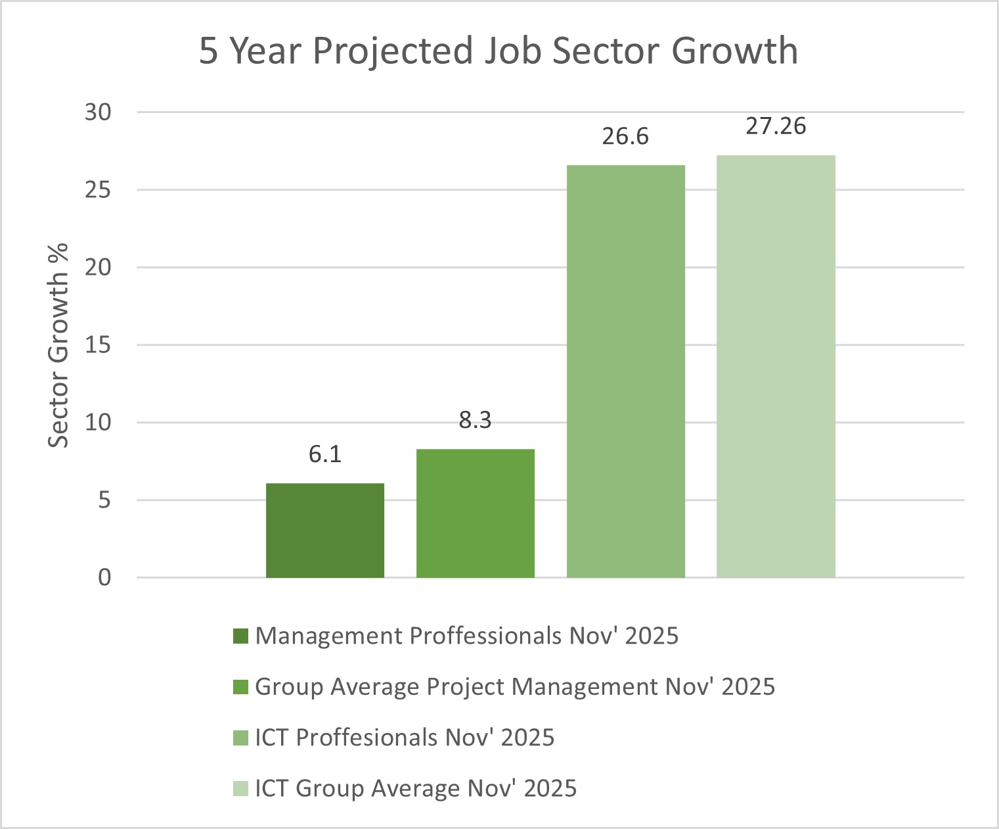
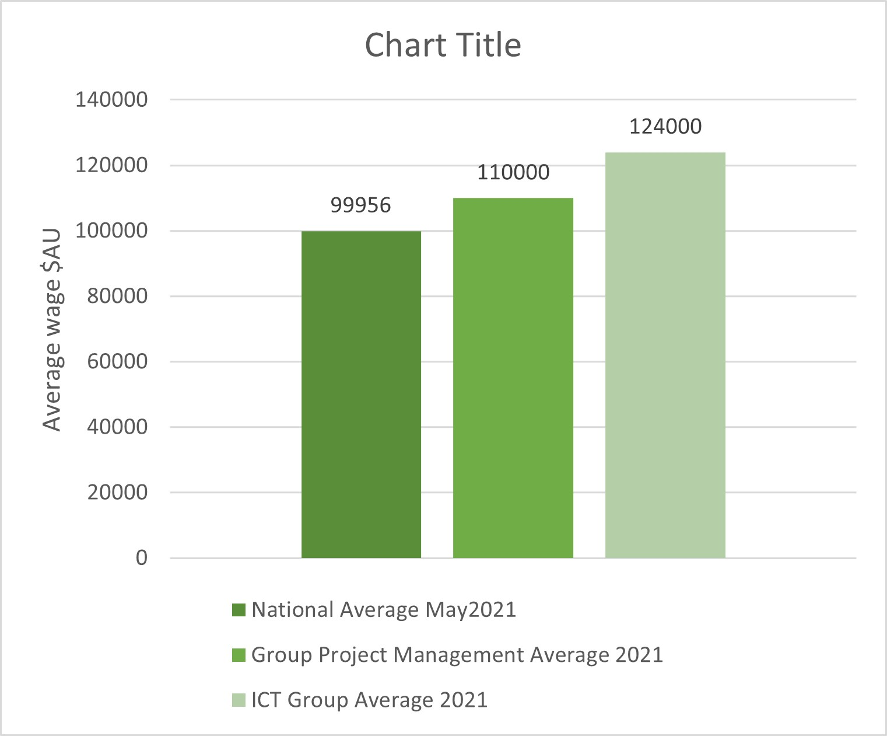

| Beau Foster | Cameron McNab | Matthew Bradley | Madison Davis | Angadh Bazaad | Kieran Symons | |
|---|---|---|---|---|---|---|
| Job Title | Software Architect | Software Developer | Software Engineer | Robotics (Mechatronics) | Project Manager | Principal Network Engineer |
| Overview (Seek 2021) | ‘Computer programmer or software developer who determines which processes and technologies the development team should use.’ | ‘Creates computer software and applications.’ | ‘Design, develop and maintain software systems.’ | ‘Design and build robots and robotic systems.’ | ‘Organizes, directs, controls and coordinate IT projects.’ | ‘Develop, plan, and implement computer network and system services and trouble shoot related problems.’ |
| Skills |
|
|
|
|
|
|
| Education |
|
|
|
|
|
|
| Average Salary | $130,000 - $160,000 | $70,000 - $100,000 | $130,000 | $70,000 - $100,000 | $75,000 - $110,000 | $60000 - $100,000 |
| Outlook (Seek 2021) | 30.0% 5 Year Projected Job Growth | 30.0% 5 Year Projected Job Growth | 30.0% 5 Year Projected Job Growth | 15.9% 5 Year Projected Job Growth | 8.3% 5 Year Projected Job Growth | 30.4% 5 Year Projected Job Growth |
Various – Seek Career Advice (2021), Various - Indeed Job Search (2021) and Labour Market Information Portal (2021)
In the table above there are several worthy data points to highlight.
Common Qualifications:
Common Sills:
Points of Difference:
Growth:

Labour Market Information Portal (2021)
In the chart above, comparative growth outlooks to November of 2025 are shown. As can be seen, both in the management sector and the ICT sector, our groups ideal jobs are not only expecting positive workforce growth, but also exceeding the industry average to November 2025.

Y Axis (2021) and Seek (2021)
In the chart above, comparative wage figures for the financial year to May 2021 are shown. The groups ideal jobs exceed the average wage in Australia, with the ICT professional roles doing the best of our job set.
Our group has a diverse range of career aspirations. Many of the job roles contain similarities and many differences. The largest intersections in our jobs are the requirement for tertiary study with an allowable amount of industry experience as a substitute, and the need to be fluent in general computer related skills and applications as is to be expected. There is a relatively large projected job growth across most of our jobs, with salaries that are all above the national average. The highlighted jobs of our group are very different in their paths, several are management role, several are technical roles, several are engineering while others are development. Overall, our groups interests are as widely varied as the members within it.